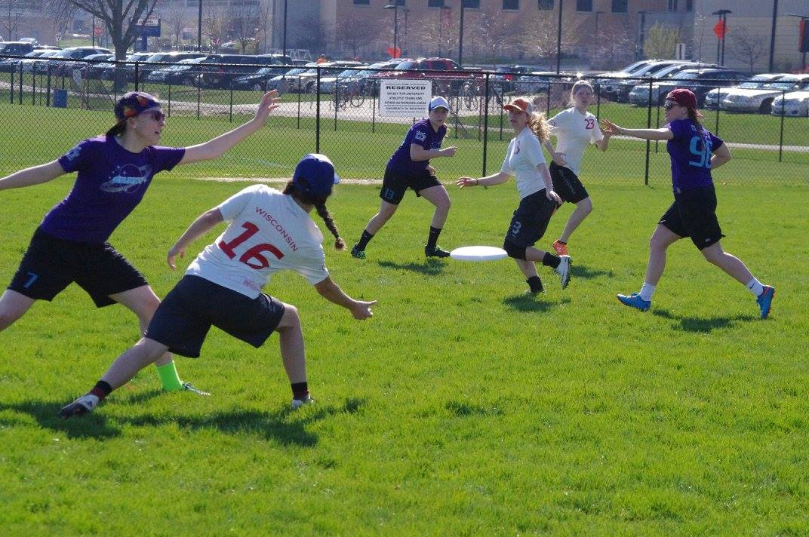

About Me
I'm Lexi and I play ultimate frisbee. Here I am, that's me in the middle, with my fellow sophomore teammates at another one of our club ultimate parties (notice the trademark backwards hat). Ultimate is my life, I live for it and it’s all I do when I'm not making websites. I’ve been playing ultimate for five years now and will definitely continue playing for the rest of my life. Some of you might be asking yourselves “is that the one with the cages?”: No that’s Disc Golf. Others may be thinking “Weren’t Frisbees invented for dogs?” Again, no. But these are common questions of any Ultimate player.
Brief History and Rules
Ultimate Frisbee was invented by a couple of college students in the 60’s. It’s a noncontact sport, played with seven people on each team, trying to work the Frisbee up the field and score in their opponent’s end zone. This is all done while the person holding the disc is unable to move. While Ultimate Frisbee may be somewhat obscure and poorly understood by many, as well as 100 years younger than some of our more “popular” sports, it’s making up for lost time and has developed quite the following. What makes Ultimate worth commemorating is its unique set of rules, its intensity and its versatility. What makes Ultimate so incredible is that even though it’s commonly referred to as “a combination of soccer, football and basketball” it is unlike any other sport. Unique to ultimate is the concept of “Spirit of the Game”. “Spirit of the Game” is the idea that teams call their own fouls and players work it out amongst themselves. There are no refs. There are no yellow cards. There are no ejections from the game. There are only 14 people on a field, all armed with the knowledge of Ultimate’s extensive rules and a respect for those rules that goes beyond the need of a mediator.
What it Takes
Ultimate is highly competitive and highly physical, but it also demands extremely high levels of sportsmanship. Out of Ultimate’s style of play great athletes are made, yes. But out of Ultimate’s Spirit of the Game, great people are made. People who never put their pride before the integrity of the game. People who not only shake the hand of their opponents, but huddle with them afterwards. On top of its unique rules, Ultimate is a sport that requires high levels of athleticism and intensity. From the second your cleats touch the grass, you’re sprinting. Whether your breaking your mark, running down the disc or staying inline with your opponent, you’re giving it your all. Ultimate requires constant movement. It also requires the grace and strength to turn on a dime. Players need to be able to pivot and take off at any moment, whether you’re sinking into soft mud or scraping against frost covered grass. Ultimate requires the sacrifice of your body. Almost every player I know has suffered some Ultimate related injury. It’s incredibly hard on your body. I personally have sustained numerous injuries, some of which will affect me for the rest of my life. Whether you’re throwing your body in the air- parallel to the ground, stretching out to catch the disc, or you’re jumping up only to collide heads with another player and land on the outside of your ankle, Ultimate demands everything from you. But it’s a sport that truly gives as much as it takes.
Why Ultimate?
Ultimate is a versatile sport that can be played by anyone almost anywhere. It requires no goals or baskets, no shin guards or pads. Just a disc and 13 of your closest friends. Ultimate has both standard field Ultimate and Beach Ultimate, as well as co-ed options. It is one of the only sports that allows co-ed play at its highest level of competition. In all, Ultimate is a relatively unorthodox sport that’s breaking barriers. From its lack of refs to its co-ed teams it’s defying the conditions of the traditional sports we all know. It’s a sport that demands the most of its players, both in their athletic ability and their character. It challenges the mind of the player in its honor of the rules. It challenges the body of the player as it pushes them further and harder each game. And it challenges the world and its view on traditional sports. Ultimate is different, it’s intense and it’s taking over. I'd recommend ultimate to anyone who is even remotely interested. It's competitive and fast paced and anyone can learn how to do it. Most people shy away because they're unable to throw a disc, but learning to throw takes about 30 minutes and learning the rules probably takes about 30 minutes, so if you have an hour to spare you can learn to play ultimate. With that being said it's easy to learn but takes years to perfect. You'll always be learning new techniques or plays and will be constantly improving, this insures you'll never get bored.